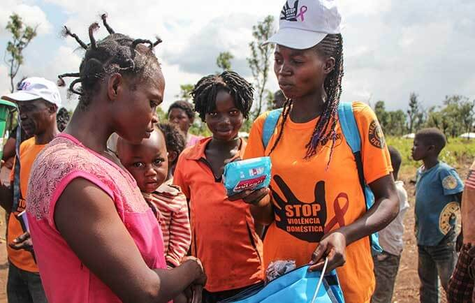
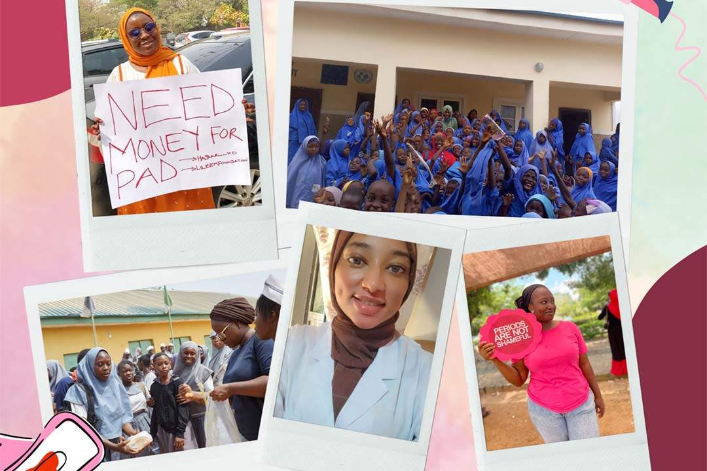

Did You Know?
Click the button to learn a fact!
Articles That Inspire Us

Every Girl Has to Learn How to Code
Reshma Saujani advocates for teaching girls coding to close the gender gap in tech and empower them for future careers.
Source: Time Read More

Left in the Dark: Period Taboos & Risk
How stigma and lack of menstrual education puts girls at risk—and what UNFPA is doing about it.
Source: USA for UNFPA Read More
Clearing the Gender Gap in Tech Education
Girls Who Code runs programs that empower girls to pursue computer science and leadership roles in tech.
Source: WomenTech Network Read More

Nigerian Activists Take on Period Poverty
Over 37 million Nigerian women and girls experience period poverty—unable to afford menstrual supplies. Activists across Kano, Kaduna, and Borno are using reusable pads and education to fight stigma and keep girls in school.
Source: Gavi / VaccinesWork Read More